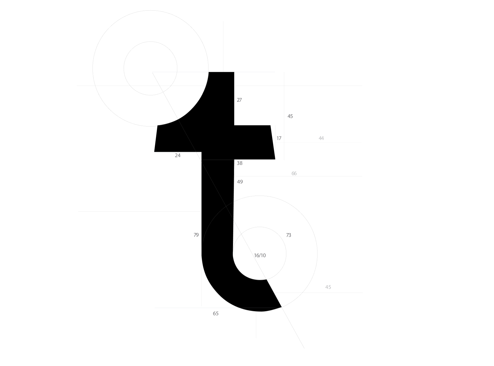
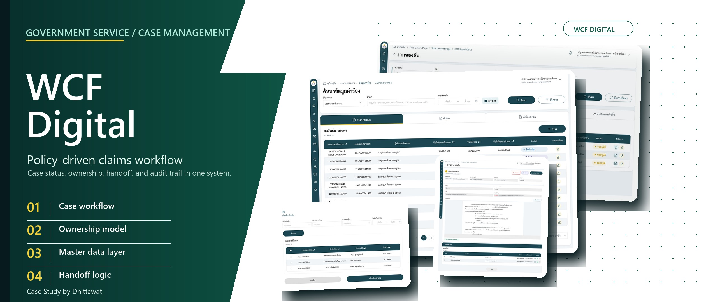

Smart Asset คือระบบ ERP ขนาดเบาที่ผมร่วมออกแบบและพัฒนากับ Software Engineer และ AI
Product Design · System Analysis
โหมดเปิดไฟล์โดยตรง: ใช้ start-local.cmd ที่โฟลเดอร์หลัก เพื่อดูเมนู แอนิเมชัน และแก้ไขแบบ Live Reload
ข้ามไปยังเนื้อหา

ผมจึงมองลึกกว่าหน้าจอ—เพื่อเข้าใจว่าอะไรทำให้ผู้ใช้ต้องรอจริง ๆ
Data Model และ System Analysis ทำให้ผมเห็นกติกา สถานะ และความสัมพันธ์หลัง UI เพื่อออกแบบให้คนกับระบบทำงานร่วมกันได้ดีขึ้น โดยไม่ผลักภาระของระบบกลับไปให้ผู้ใช้
Lead UX/UI & Senior Product Designer
กรุงเทพฯ / ทำงานทางไกล
ผลงานที่เลือก
5 โครงการ ครอบคลุมการจัดการทรัพย์สิน การประสานงานวิกฤต งานภาครัฐ โครงสร้างพื้นฐาน และงานลงทะเบียนการประชุมระดับนานาชาติ
Product Design · System Analysis
UX/UI · Workflow Design
UX · Workflow Design
UX/UI · Workflow Design
UX/UI · Workflow Design

ความสามารถ
ผมเชื่อมเป้าหมายของผลิตภัณฑ์เข้ากับรายละเอียดเชิงปฏิบัติการ เพื่อทำให้บริการที่ซับซ้อนใช้งานได้จริง
ทำความเข้าใจผู้เกี่ยวข้อง ข้อจำกัด การตัดสินใจ และข้อมูลที่ต้องส่งต่อระหว่างกัน
เกี่ยวกับเปลี่ยนกติกาและกรณียกเว้นให้เป็นโฟลว์ สถานะ และการนำทางที่เข้าใจง่าย
เกี่ยวกับออกแบบหน้าจอให้ผู้ใช้เห็นสถานะ เลือกก้าวถัดไป และรับมือเมื่อเกิดข้อผิดพลาด
เกี่ยวกับทำให้ทีมผลิตภัณฑ์ วิศวกรรม และผู้มีส่วนได้ส่วนเสียเห็นระบบเดียวกันและพัฒนาต่อได้
เกี่ยวกับหลักการทำงาน
เป้าหมาย
นั่นหมายถึงการออกแบบทั้งอินเทอร์เฟซที่มองเห็น และพฤติกรรมเบื้องหลังให้เป็นประสบการณ์เดียวกัน
มาคุยกันเรื่องระบบ ผู้ใช้งาน และก้าวถัดไปที่นำไปใช้ได้จริง